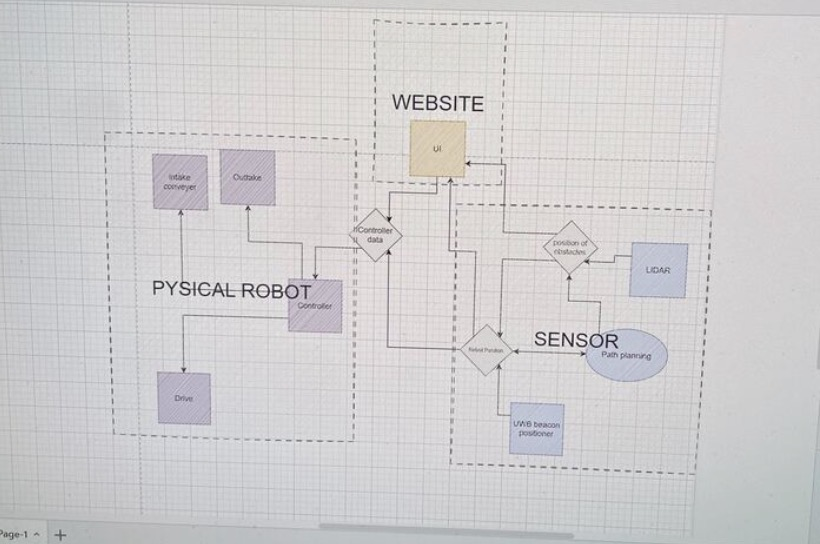
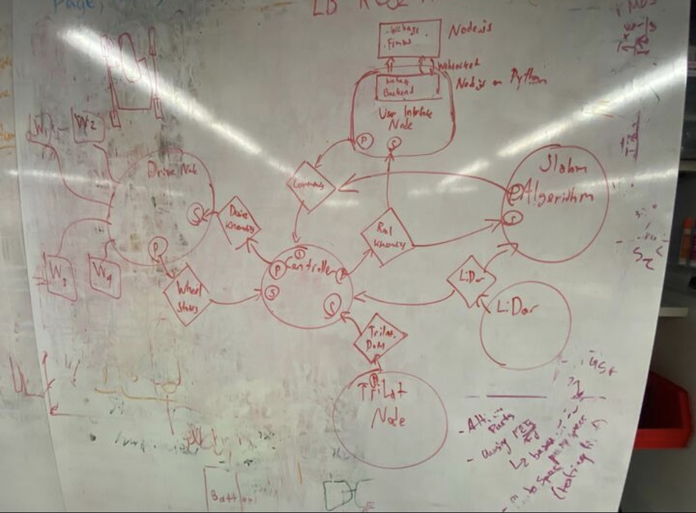

SEDS Lunabotics - Software
The Challenge & Process
Designed a modular ROS2 architecture for Northeastern's SEDS Lunabotics rover, implementing sensing, navigation, and control nodes with standardized interfaces allowing for a fully autonomous rover.
The Solution & Impact
Key Achievements
- Contributed to 3rd place finish nationally in the NASA Lunabotics style competition at the University of Iowa
- Designed modular ROS2 architecture for autonomous Lunabotics rover
- Implemented distributed nodes for perception, localization, navigation, and control
- Defined clean topic, service, and message interfaces to enable parallel team development
Technical Implementation
- Distributed Architecture: Implemented distributed nodes for perception, localization, navigation, and control
- Standardized Interfaces: Defined clean topic, service, and message interfaces
- Sensor Integration: Integrated sensor pipelines (IMU, encoders, vision) with navigation and actuator control
- Dual Mode Support: Supported autonomous and tele-operated modes with reliable DDS-based communication
- Robustness: Prioritized robustness, real-time responsiveness, and debuggability under competition constraints

